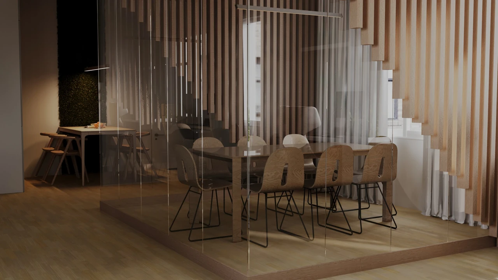

Усі проєкти
Офіс
Інтер'єр офісу, спроєктований в MBA Development Group: скляна переговорна, обгорнута рейковою дерев'яною перегородкою, і відкрита робоча зона з моховою стіною.
- Моя частина
- Дизайн-концепція та візуалізація: зонування, матеріали, меблі, рендер. Робочі креслення не входили в мою частину.
- Рік
- 2024–2025

Переговорна всередині перегородки
Безрамна скляна переговорна на дерев'яному подіумі біля вікна, обрамлена ступінчастим рейковим каркасом. Офіс лишається відкритим і світлим, але отримує тиху зону.
- Стиль
- Теплий мінімалізм з біофільними акцентами.
- Зони
- Робочі місця вздовж вікон і стін, переговорна на 8 осіб, кухонний куточок, санвузол.
- Матеріали
- Дерев'яні рейки, безрамне скло, світла дубова підлога, мохова стіна, білі столи.
- Програми
- 3ds Max: моделювання та сцена. Corona Renderer: матеріали, світло, рендер. Photoshop: постобробка.
Рендери
Креслення
М 1:50 і 1:25. Натисніть, щоб відкрити в повному розмірі.